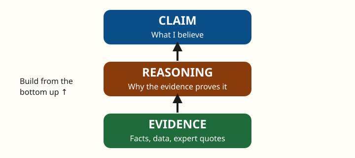

Learn the Skills
There are four skills in this lesson. Each one is taught three ways. Pick the way that works best for you, or use more than one.
Before you start: three ways to learn
| Approach | What it looks like | Tips for success |
|---|---|---|
| 📖 Read it | Short explanations with key words in bold and examples. | Read each part twice: once to get the big idea, once to notice details. Write down each bold word with its meaning in your own words. |
| 🎧 See and hear it | Diagrams you can study and an audio walkthrough (with a transcript). | Pause the audio after each part and say the main idea out loud. Keep the diagram open while you listen. Use the transcript to review or if you can't play sound. |
| ✋ Try it | Quick practice activities. Open "Check your answer" to see if you got it. | Answer first, then check. Wrong answers are useful: read the explanation and try the next one. Work with a partner if you can. |
🎧 Audio walkthrough of the whole lesson
Read the audio walkthrough transcript (about 8 minutes of listening)
Part 1: Write a claim
📖 Read it
A debate starts with a resolution. A resolution is a statement that people can reasonably disagree about. For example: "Schools should ban cell phones during the school day."
Your claim is the side you take on the resolution, in one clear sentence. A good claim:
- Picks a side. Not "phones have good and bad parts."
- Is specific. Say what, who, or when.
- Can be argued. A fact everyone agrees on ("Many students own phones") is not a claim.
A simple formula: [Resolution topic] should / should not [action] because [main reason].
🎧 See and hear it
Listen to Part 1 of the audio walkthrough (Part 1 transcript). Then look at this side-by-side comparison:
| Weak claim | Problem | Strong claim |
|---|---|---|
| Phones are kind of distracting sometimes. | Doesn't pick a side on the resolution | Schools should ban cell phones during class time because phones distract students from learning. |
| Lots of kids have phones. | A fact, not an argument | Schools should not ban cell phones because students need them to contact family in an emergency. |
✋ Try it
Is each sentence a strong claim? Decide, then check.
A. "Homework is something students do at home." Check your answer
Not a claim. It's a definition. No one would argue against it.
B. "Middle schools should give no more than 30 minutes of homework a night because students need time for sleep and activities." Check your answer
Strong claim. It picks a side, is specific (30 minutes, middle school), and gives a reason someone could argue against.
C. "School lunches could maybe be better." Check your answer
Weak claim. "Could maybe" doesn't commit to a side, and "better" is vague. Try: "Schools should offer a vegetarian option at every lunch because…"
Tip
If you can't imagine anyone disagreeing with your claim, it's not debatable yet. Make it more specific or take a stronger position.
Part 2: Support your claim with evidence and reasoning
📖 Read it
A claim alone is just an opinion. To prove it, use Claim–Evidence–Reasoning (CER) for each supporting point:
- Claim: the point you're proving.
- Evidence: facts, data, examples, or expert statements that back it up. Always say where it came from.
- Reasoning: your explanation of how the evidence proves the claim. This is the part most people skip, and it's the part that wins arguments.
Is your source credible? Ask four questions:
- Who wrote it? Are they an expert or a trusted organization?
- When was it published? Is it recent enough for your topic?
- Why was it written? To inform, or to sell or persuade?
- Can you confirm it? Do other trusted sources say the same thing?
🎧 See and hear it

Listen to Part 2 of the audio walkthrough (Part 2 transcript).
✋ Try it
Label each sentence as Claim, Evidence, or Reasoning.
- "Students should get at least 8 hours of sleep on school nights."
- "Health experts recommend 8 to 10 hours of sleep a night for teenagers."
- "Because tired students have trouble focusing, getting enough sleep helps them learn more in class."
Check your answers
1 = Claim (the position). 2 = Evidence (it comes from experts). 3 = Reasoning (it explains why the evidence matters).
Want more practice? Use the printable CER graphic organizer worksheet.
Tip
A quick test for reasoning: after your evidence, say "This matters because…" and finish the sentence. That's your reasoning.
Part 3: Answer the other side
📖 Read it
A counterargument is the best point the other side could make against you. A rebuttal is your answer to it. Addressing the other side makes you more convincing, because it shows you've thought it through.
Use the four-step refutation:
- They say… Restate their point fairly.
- But… State why it's wrong or weaker than your point.
- Because… Give evidence or reasoning.
- Therefore… Explain why your side still wins.
🎧 See and hear it

Listen to Part 3 of the audio walkthrough (Part 3 transcript).
✋ Try it
Claim: "Schools should have a four-day week." Counterargument: "Parents would need child care on the fifth day." Write a four-step rebuttal, then compare.
See a sample rebuttal
They say parents would need child care on the fifth day. But schools can solve this without five full days. Because a district can offer optional supervised programs on the fifth day, families who need care would still have it. Therefore child care is a solvable problem, not a reason to reject the four-day week.
Tip
Choose the strongest counterargument, not the easiest one. Beating a weak argument doesn't convince anyone.
Part 4: Present your argument
📖 Read it
Organize every argument, spoken or written, in this order:
- Hook and claim: grab attention, then state your claim.
- Point 1: CER.
- Point 2: CER.
- Rebuttal: four-step refutation of the strongest counterargument.
- Conclusion: restate your claim and tell the audience why it matters.
Use signposts so your audience can follow: "My first point is…", "Next…", "The other side might say…", "In conclusion…".
🎧 See and hear it
Listen to Part 4 of the audio walkthrough (Part 4 transcript), which includes a full sample speech.
✋ Try it
Put these parts of a speech in the right order: (a) "In conclusion, …" (b) "My first point is …" (c) "Imagine sitting in class while your phone buzzes every two minutes. Schools should…" (d) "The other side might say …" (e) "My second point is …"
Check your answer
c, b, e, d, a. Hook and claim, point 1, point 2, rebuttal, conclusion.
Tip
Presenting out loud? Practice once in front of a mirror or record yourself on your phone. Writing? Read your draft aloud: if you run out of breath, split the sentence.
Next step
See all four skills used together in the worked example on phones in school.